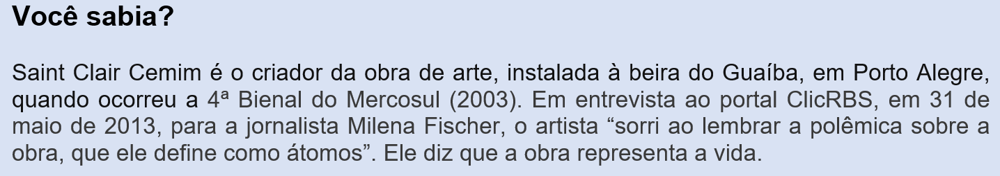

Capítulo 3: Sáude física e mental do trabalhador da indústria
Questão-problema:
Como está a saúde física e mental do trabalhador da indústria metalúrgica?
Em qualquer área em que atuamos, o trabalho é o que nos define como cidadãos, pois, como diz Suzana Albornoz, o trabalho tem a significação de “realizar uma obra que te expresse, que te dê reconhecimento social e que permaneça além da tua vida”. Por isso é importante que você goste do que faz. Porém, em tudo, podemos viver contradições. Quando você percebe uma ameaça no seu trabalho, por exemplo, seu sistema nervoso reage com a liberação de inúmeros hormônios do estresse, entre eles a adrenalina e o cortisol, que ajudam nosso corpo a suportar e a superar problemas que aparecem na nossa vida. O estresse nem sempre é ruim. Em pequenas doses, ele ajuda você a terminar seu trabalho e serve como motivação, como impulso, para você dar o seu melhor. Em situações de emergência, o estresse pode salvar sua vida, dando-lhe força extra para defender-se, por exemplo, ou estimulando você a pisar nos freios em questão de milésimos de segundos para evitar um acidente. Mas, quando o estresse deixa de ser útil, ele começa a causar grandes danos à sua saúde, ao seu humor, à sua produtividade, aos seus relacionamentos e à sua qualidade de vida. Esses danos às vezes são tão violentos que empresas, preocupadas com isso, desenvolvem atividades específicas para amenizá-los. Se você frequentemente vem se sentindo oprimido, com cansaço exagerado, é hora de tomar algumas medidas para trazer de volta o equilíbrio do seu sistema nervoso. Você pode se proteger aprendendo a reconhecer os sinais e sintomas do estresse e adotando medidas para reduzir seus efeitos nocivos.
Reconstruindo conhecimentos:
O que é um texto?
Textos não são simples amontoados de palavras ou frases; eles precisam fazer sentido. O leitor constrói o sentido do texto quando articula diferentes níveis de conhecimento, entre eles o conhecimento de mundo. Um texto é um conjunto coerente de enunciados escritos ou orais. O texto tem intenção de comunicar alguma coisa a alguém: procura transmitir uma determinada mensagem que adquire sentido de acordo com o contexto. Esse tipo de conhecimento costuma ser adquirido pelas nossas experiências pessoais e nosso convívio em sociedade. Há vários tipos de textos: narrar a alguém o que aconteceu no capítulo da novela, escrever um bilhete, transmitir um recado, a escrita de numa bula de remédio, um poema, um conto, uma piada, um romance, uma instrução de como usar um eletrodoméstico, um estudo médico, entre tantos outros exemplos. Como podemos ver, a extensão do texto é bastante variável, podendo ir desde uma palavra, meia-dúzia ou até alguns milhões delas. Veja a publicidade a seguir:
A publicidade apresentada é considerada um texto. Foi retirada da Revista “Amanhã”, voltada aos assuntos empresariais, e apresenta uma oportunidade de o
empresário – ou o trabalhador da empresa – conversar e/ou aprender a lidar com um problema que atinge a todos: o estresse e, consequentemente, a questão da
saúde do trabalhador. No pouco espaço utilizado, tal publicidade informa-nos de várias coisas:
1. Diz que vai acontecer o quarto congresso (congresso é um encontro muito importante, com gente que entende do assunto; este já vem acontecendo há, no mínimo, quatro anos) sobre stress e saúde no trabalho.
2. Informa que o congresso é internacional, isto é, vem gente de outros países falar sobre o assunto (isso confere status para o encontro).
3. Mostra que este congresso inclui outro encontro: o sexto Fórum Internacional sobre a Qualidade de Vida no Trabalho. Isso indica que o fórum vinha já acontecendo antes do primeiro Congresso, e que o Congresso tem maior importância (há também diferença nos tamanhos das letras entre um e outro).
4. Informa que será abordado o “impacto” do estresse nas cidades. O impacto, que também significa “choque”, traz, no seu significado, falar das causas e consequências do estresse.
5. Diz em que data acontecerá, onde acontecerá.
6. Indica as presenças de grandes palestrantes estrangeiros (um americano, outro alemão) nas áreas de saúde e estresse.
7. Cita telefone, fax e sites para que os interessados possam obter mais informações.
8. Cita as empresas que estão patrocinando, apoiando, realizando e promovendo o evento.
9. Informa que é um congresso pago, mas aponta a possibilidade de custo reduzido se o interessado se inscrever uma semana antes.
10. Aparece nele, ainda, um símbolo de uma possível busca do equilíbrio mental. São duas cabeças unidas por uma espécie de encefalograma: uma representando o envolvimento com o trabalho (as engrenagens) e a outra, o lazer (a areia, a praia, o mar, o céu tranquilos).
Viu quanta informação e significados juntos num espaço tão pequeno? Todos esses significados – formas, desenhos, tipos de letras, cores, palavras – nos dizem que esta figura é um TEXTO.
RODA VIVA
(Chico Buarque de Holanda)
Tem dias que a gente se sente
Como quem partiu ou morreu
A gente estancou de repente
Ou foi o mundo então que cresceu.
A gente quer ter voz ativa
No nosso destino mandar
Mais eis que chega a roda viva
E carrega o destino pra lá
A gente vai contra a corrente
Até não poder resistir
Na volta do barco é que sente
O quanto deixou de cumprir.
Faz tempo que a gente cultiva
A mais linda roseira que há
Mais eis que chega a roda viva
E carrega a roseira pra lá.
A roda da saia mulata
Não quer mais rodar, não senhor.
Não posso fazer serenata
A roda do samba acabou.
A gente toma a iniciativa,
Viola na rua a cantar
Mais eis que chega a roda viva
E carrega a viola pra lá.
O samba, a viola, a roseira
Um dia a fogueira queimou
Foi tudo ilusão passageira
Que brisa primeira levou.
No peito a saudade cativa
Faz força pro tempo parar,
Mais eis que chega a roda viva
E carrega a saudade pra la´
Refrão:
Roda mundo, roda gigante
Roda moinho, roda pião
O tempo rodou num instante
Nas voltas do meu coração.
O significado das palavras
Quando as palavras se parecem no significado que têm, a gente usa dizer que há “sinonímia” entre elas. Por exemplo, no verso “a gente estancou de repente”,
a palavra “estancou” tem como sinônimos “parou”, “interrompeu”, “deteve”. Como essas palavras estão no dicionário como sinônimas de “estancou” (querem dizer
a mesma coisa), vamos dizer que elas têm significado denotativo.
Mas, por exemplo, “a gente estancou de repente” pode ter também o significado diferente daquele que encontramos nos dicionários.
Então, vamos dizer que a palavra é plurissignificativa. “Estancou de repente” poderia significar “não cresceu”, “não se deu conta”. Quando acontece isso,
quando o significado “foge” do dicionário, dizemos que a palavra tem valor conotativo.
O valor conotativo das palavras é descoberto somente dentro do contexto em que foram escritas.
Observe que, no exemplo usado, a palavra “estancou” aparece em:
A gente estancou de repente
Ou foi o mundo então que cresceu.
A palavra “ou” dá a ideia de uma alternativa: ou é uma coisa, ou é outra, isto é,
Ou foi a gente que estancou
Ou
Foi o mundo então que cresceu
Se o mundo cresceu, se o mundo mudou, significa também que, com a gente, aconteceu o inverso: a gente não cresceu, não se deu conta, a gente não mudou, a gente estancou.

O que é poesia?
A letra da “Roda Viva” é um texto, mas pode ser também considerada uma poesia em forma de poema. É um poema, porque está escrita em versos. Se não fosse assim, seria um texto em prosa. Esses versos têm rimas: “roseira” tem sílabas iguais à “passageira”; “cativa” igual à “viva”, e assim outras palavras.
Para entender mais:
Quais são as características de um poema?
[INSERIR VÍDEO SESI EDUCA
097_LP_ENS_FUN_09_O7_AT
097_LP_ENS_FUN_09_O7_DT]
Muita gente acha que poema e poesia são a mesma coisa, mas não são. Poema tem a ver com a palavra. A poesia pode estar em todas as coisas, até mesmo nos mais simples gestos; pode estar presente na dança de ballet ou de tango, numa escultura, numa pintura, na fotografia, na música, no teatro, na literatura. O que faz algo ser poesia é quando esse algo provoca no leitor ou no espectador uma experiência sensorial, isto é, quando faz nascer em nós – através da mente, da visão, da audição, do olfato, do tato, do paladar – alguma coisa diferente, que “mexe” conosco. Percebê-la é uma questão íntima e individual, pois o que soa poético para mim pode não representar nada para você. Como nosso estudo é a língua portuguesa, podemos encontrar poesia no poema ou na prosa. É na palavra que a poesia vai nascer. A palavra vai se desvincular de seus significados habituais, vai nos provocar uma experiência sensorial e vai alcançar diferentes significações, como vimos em Chico Buarque.

Eis alguns exemplos de poesia escrita: leia que maravilha este conceito de liberdade:
“Liberdade – essa palavra que o sonho humano alimenta: que não há ninguém que explique e ninguém que não entenda!” (Cecília Meireles, 1953)
(A gente consegue explicar mesmo o que é liberdade? Existe alguém que não entenda o que é liberdade?)
Abaixo, um poema que fala sobre o conceito de depressão, escrito entre 1498 a 1515:
Comigo me Desavim
(Sá de Miranda)
Comigo me desavim
Vejo-me em grande perigo,
Não posso viver comigo
Nem posso fugir de mim.
Antes que este mal tivesse,
Da outra gente fugia.
Agora já fugiria de mim,
Se de mim pudesse.
Que cabo espero ou que fim
Deste cuidado que sigo,
Pois trago a mim comigo
Tamanho imigo de mim?

Agora, vejamos um poema que fala sobre miséria de alguns irmãos nossos:
O Bicho
(Manuel Bandeira)
Vi ontem um bicho
Na imundície do pátio
Catando comida entre os detritos.
Quando achava alguma coisa,
Não examinava nem cheirava:
Engolia com voracidade.
O bicho não era um cão,
Não era um gato,
Não era um rato.
O bicho, meu Deus, era um homem.
Praticando:
1. Para a gente gostar de poesia, é preciso ler poesia. Pesquise no Google sobre os poemas de:
Vinicius de Moraes (sonetos)
Paulo Leminski
Clarice Lispector
Cecilia Meireles
Manuel Bandeira
São sugestões de escritores. Você pode escolher um deles ou descobrir outros. Transcreva um que tenha tocado sua sensibilidade, tentando explicar por quê.
2. Você já se dedicou a alguma atividade com o objetivo de aliviar o estresse? Se você ainda não fez nada, diga por que nunca fez e se pretende fazê-lo. Se você,
ao contrário, faz atividades antiestressantes, diga quais são e o que elas lhe proporcionaram. Escreva ente 20 a 30 linhas.
Cada questionamento poderá formar – no mínimo – um parágrafo, isto é, um conjunto de frases. Um parágrafo inicia sempre com nova linha, ou seja, deixa-se um espaço
na margem e letra maiúscula. E não esqueça que, quando você encerra uma frase, deve colocar ponto e que, depois de ponto, também vem letra maiúscula.
O que aprendi:
- Textos são enunciados que têm sentido para quem ouve ou lê, pois pode haver textos orais ou escritos.
- Há muitas formas de texto, desde um simples bilhete até um sofisticado estudo sobre fatos do mundo.
- Um texto pode variar de tamanho: desde meia-dúzia de palavras a bilhões delas.
- Uma publicidade se caracteriza como texto.
- Poema é um texto feito em versos.
- Uma poesia é um texto, mas se caracteriza pelo poder que tem de tocar sensitivamente o leitor.
- A sensibilidade à poesia é muito subjetiva, vai depender do leitor, bem como de suas experiências de vida.
- As palavras têm significados. Quando o dicionário dá conta do que elas significam na primeira definição, diz-se que o significado é denotativo.
- Quando uma palavra assume outro significado, que foge da definição primeira do dicionário, diz-se que a palavra tem significado conotativo.